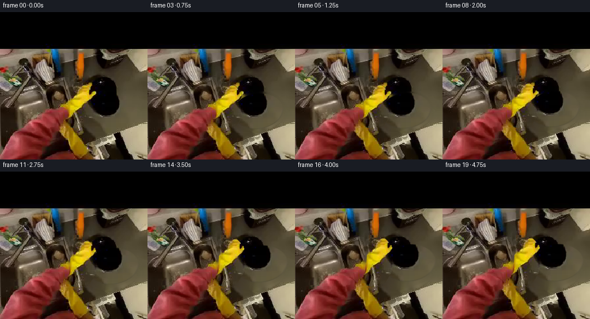
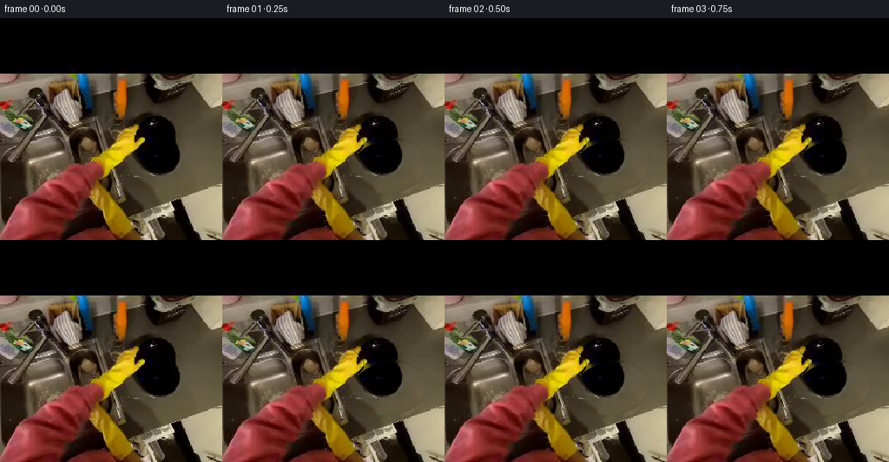

CODING AGENTS AS PIXEL WORLD MODELS
traex/DeepSeek-V4.1-Flash · common50_0024
点击播放 · 原生 RGB 像素
此结果可播放，但该运行尚未通过最终提交审核。页面展示不代表评测通过。
逐轮保存的候选
回放视频、检查图与代码变化。
每份候选均可单独播放。实际图片检查记录在下方工具轨迹中。
候选 01播放与检查图
点击播放 · 原生 RGB 像素


展开代码变化
--- 上一保存版本
+++ 本次保存版本
@@ -0,0 +1,242 @@
+"""Generate a short grasp-and-lift continuation from first_frame.png."""
+
+from pathlib import Path
+
+import cv2
+import numpy as np
+from PIL import Image
+
+import artifact_io
+
+
+CASE_DIR = Path(__file__).resolve().parent
+WIDTH = HEIGHT = 256
+N_FRAMES = 20
+FPS = 4
+
+
+def smoothstep(value):
+ value = np.clip(value, 0.0, 1.0)
+ return value * value * (3.0 - 2.0 * value)
+
+
+def ellipse_field(cx, cy, rx, ry, angle_degrees):
+ yy, xx = np.mgrid[0:HEIGHT, 0:WIDTH].astype(np.float32)
+ theta = np.deg2rad(angle_degrees)
+ dx, dy = xx - cx, yy - cy
+ xr = np.cos(theta) * dx + np.sin(theta) * dy
+ yr = -np.sin(theta) * dx + np.cos(theta) * dy
+ return (xr / rx) ** 2 + (yr / ry) ** 2
+
+
+def polygon_mask(points):
+ mask = np.zeros((HEIGHT, WIDTH), np.uint8)
+ cv2.fillPoly(mask, [np.asarray(points, np.int32)], 1)
+ return mask.astype(bool)
+
+
+def segment_hand(image):
+ hsv = cv2.cvtColor(image, cv2.COLOR_RGB2HSV)
+ glove_region = polygon_mask(
+ [
+ (112, 198),
+ (119, 181),
+ (120, 158),
+ (124, 139),
+ (133, 127),
+ (147, 126),
+ (159, 138),
+ (164, 152),
+ (160, 166),
+ (163, 178),
+ (153, 195),
+ (135, 201),
+ ]
+ )
+ sleeve_region = polygon_mask(
+ [
+ (0, 178),
+ (23, 180),
+ (51, 185),
+ (78, 187),
+ (98, 193),
+ (113, 203),
+ (121, 220),
+ (128, 255),
+ (0, 255),
+ ]
+ )
+
+ yellow = (
+ (hsv[:, :, 0] >= 11)
+ & (hsv[:, :, 0] <= 42)
+ & (hsv[:, :, 1] >= 62)
+ & (hsv[:, :, 2] >= 30)
+ & glove_region
+ )
+ pink = (
+ ((hsv[:, :, 0] <= 13) | (hsv[:, :, 0] >= 171))
+ & (hsv[:, :, 1] >= 65)
+ & (hsv[:, :, 2] >= 24)
+ & sleeve_region
+ )
+
+ mask = (yellow | pink).astype(np.uint8)
+ mask = cv2.morphologyEx(mask, cv2.MORPH_CLOSE, np.ones((5, 5), np.uint8))
+ mask = cv2.morphologyEx(mask, cv2.MORPH_OPEN, np.ones((3, 3), np.uint8))
+
+ # Color thresholds miss the dark creases between fingers. Keep the outer
+ # silhouette solid so the moving layer remains opaque.
+ contours, _ = cv2.findContours(mask, cv2.RETR_EXTERNAL, cv2.CHAIN_APPROX_SIMPLE)
+ filled = np.zeros_like(mask)
+ for contour in contours:
+ if cv2.contourArea(contour) >= 18:
+ cv2.drawContours(filled, [contour], -1, 1, cv2.FILLED)
+ filled = cv2.dilate(filled, np.ones((3, 3), np.uint8), iterations=1)
+ return filled.astype(np.float32)
+
+
+def make_plate_sprite(image, hand_alpha):
+ plate_d = ellipse_field(191.0, 171.5, 44.0, 30.5, -7.0)
+ plate_hard = plate_d <= 1.0
+ plate_alpha = 1.0 - smoothstep((plate_d - 0.965) / 0.07)
+ plate_alpha *= plate_hard | (plate_d <= 1.035)
+
+ # Recover the part of the plate hidden by the glove. The glossy black
+ # surface inpaints cleanly because it is bounded by a continuous oval.
+ hidden = ((hand_alpha > 0.35) & (plate_d <= 1.06)).astype(np.uint8) * 255
+ hidden = cv2.dilate(hidden, np.ones((3, 3), np.uint8), iterations=1)
+ plate_rgb = cv2.inpaint(
+ cv2.cvtColor(image, cv2.COLOR_RGB2BGR),
+ hidden,
+ 5,
+ cv2.INPAINT_TELEA,
+ )
+ plate_rgb = cv2.cvtColor(plate_rgb, cv2.COLOR_BGR2RGB).astype(np.float32)
+
+ # A faint continuous edge restores the rim where the glove obscured it.
+ distance = np.sqrt(np.maximum(plate_d, 0.0))
+ edge = np.exp(-((distance - 1.0) / 0.045) ** 2)
+ yy = np.mgrid[0:HEIGHT, 0:WIDTH][0]
+ lower_edge = smoothstep((yy - 157.0) / 22.0)
+ edge_rgb = np.array([58.0, 57.0, 53.0], np.float32)
+ edge_alpha = edge * lower_edge * 0.22
+ plate_rgb = plate_rgb * (1.0 - edge_alpha[..., None]) + edge_rgb * edge_alpha[..., None]
+
+ return plate_rgb, np.clip(plate_alpha, 0.0, 1.0).astype(np.float32)
+
+
+def make_clean_plate(image, hand_alpha):
+ plate_d = ellipse_field(191.0, 171.5, 45.5, 32.0, -7.0)
+ removal = ((plate_d <= 1.10) | (hand_alpha > 0.2)).astype(np.uint8) * 255
+ removal = cv2.dilate(removal, np.ones((3, 3), np.uint8), iterations=1)
+ bgr = cv2.cvtColor(image, cv2.COLOR_RGB2BGR)
+ clean = cv2.inpaint(bgr, removal, 9, cv2.INPAINT_TELEA)
+ clean = cv2.cvtColor(clean, cv2.COLOR_BGR2RGB)
+
+ # Very large masked regions can become overly smooth. Reintroduce only
+ # the source's existing low-frequency grain, never new scene content.
+ smooth = cv2.GaussianBlur(clean, (0, 0), 5.0)
+ clean = np.clip(clean.astype(np.float32) * 0.92 + smooth.astype(np.float32) * 0.08, 0, 255)
+ return clean.astype(np.float32)
+
+
+def warp_hand(image, hand_alpha, lift, grasp):
+ yy, xx = np.mgrid[0:HEIGHT, 0:WIDTH].astype(np.float32)
+
+ # The glove advances and rises while the sleeve stays anchored near the
+ # bottom edge, producing an arm extension rather than a sliding cutout.
+ weight = smoothstep((226.0 - yy) / 88.0)
+ dx = 6.0 * lift * weight
+ dy = -11.5 * lift * weight
+
+ # Close the upper fingers around the rim during the first second.
+ contact = np.exp(-(((xx - 146.0) / 13.0) ** 2 + ((yy - 146.0) / 15.0) ** 2))
+ dx += 1.2 * grasp * contact
+ dy += 2.2 * grasp * contact
+
+ map_x = (xx - dx).astype(np.float32)
+ map_y = (yy - dy).astype(np.float32)
+ rgb = cv2.remap(image, map_x, map_y, cv2.INTER_CUBIC, borderMode=cv2.BORDER_REPLICATE)
+ alpha = cv2.remap(hand_alpha, map_x, map_y, cv2.INTER_LINEAR, borderMode=cv2.BORDER_CONSTANT)
+ return rgb.astype(np.float32), np.clip(alpha, 0.0, 1.0)
+
+
+def add_contact_shadow(background, cx, cy, lift):
+ yy, xx = np.mgrid[0:HEIGHT, 0:WIDTH].astype(np.float32)
+ rx = 42.0 + 7.0 * lift
+ ry = 26.0 + 4.0 * lift
+ offset_x = 4.0 + 3.0 * lift
+ offset_y = 6.0 + 8.0 * lift
+ d = ((xx - cx - offset_x) / rx) ** 2 + ((yy - cy - offset_y) / ry) ** 2
+ shadow = np.exp(-1.9 * d)
+ shadow *= 0.23 - 0.07 * lift
+ tint = np.array([9.0, 9.0, 8.0], np.float32)
+ return background * (1.0 - shadow[..., None]) + tint * shadow[..., None]
+
+
+def composite(background, foreground_rgb, foreground_alpha):
+ alpha = foreground_alpha[..., None]
+ return background * (1.0 - alpha) + foreground_rgb * alpha
+
+
+def main():
+ source = np.asarray(Image.open(CASE_DIR / "first_frame.png").convert("RGB"), dtype=np.uint8)
+ assert source.shape == (HEIGHT, WIDTH, 3)
+
+ hand_alpha = segment_hand(source)
+ plate_rgb, plate_alpha = make_plate_sprite(source, hand_alpha)
+ clean_background = make_clean_plate(source, hand_alpha)
+ source_float = source.astype(np.float32)
+
+ frames = []
+ for index in range(N_FRAMES):
+ if index == 0:
+ frames.append(source.copy())
+ continue
+
+ grasp = float(smoothstep((index - 0.5) / 5.0))
+ lift = float(smoothstep((index - 3.0) / 15.0))
+ settle = float(smoothstep((index - 17.0) / 2.0))
+ lift *= 1.0 - 0.025 * settle
+
+ plate_cx = 191.0 + 6.5 * lift
+ plate_cy = 171.5 - 14.0 * lift
+ frame = add_contact_shadow(clean_background, plate_cx, plate_cy, lift)
+
+ plate_matrix = cv2.getRotationMatrix2D(
+ (191.0, 171.5), -1.0 * lift, 1.0 + 0.055 * lift
+ )
+ plate_matrix[:, 2] += np.array([plate_cx - 191.0, plate_cy - 171.5])
+ plate_rgb_warped = cv2.warpAffine(
+ plate_rgb, plate_matrix, (WIDTH, HEIGHT), flags=cv2.INTER_CUBIC,
+ borderMode=cv2.BORDER_CONSTANT,
+ )
+ plate_alpha_warped = cv2.warpAffine(
+ plate_alpha, plate_matrix, (WIDTH, HEIGHT), flags=cv2.INTER_LINEAR,
+ borderMode=cv2.BORDER_CONSTANT,
+ )
+ frame = composite(frame, plate_rgb_warped, np.clip(plate_alpha_warped, 0.0, 1.0))
+
+ hand_rgb, hand_alpha_warped = warp_hand(source_float, hand_alpha, lift, grasp)
+ frame = composite(frame, hand_rgb, hand_alpha_warped)
+
+ # Tiny exposure breathing keeps the locked camera from looking frozen.
+ exposure = 1.0 + 0.004 * np.sin(index * 0.7)
+ frame = np.clip(frame * exposure, 0.0, 255.0)
+ frames.append(np.rint(frame).astype(np.uint8))
+
+ frames = np.stack(frames, axis=0)
+ assert frames.shape == (N_FRAMES, HEIGHT, WIDTH, 3)
+ assert frames.dtype == np.uint8
+ assert np.array_equal(frames[0], source)
+ artifact_io.save(frames, CASE_DIR)
+
+ # Inspection helpers are not part of the submitted video.
+ Image.fromarray(frames[-1]).save(CASE_DIR / ".tmp" / "candidate_last.png")
+ Image.fromarray(clean_background.astype(np.uint8)).save(CASE_DIR / ".tmp" / "candidate_background.png")
+ Image.fromarray((hand_alpha * 255).astype(np.uint8)).save(CASE_DIR / ".tmp" / "candidate_hand_mask.png")
+
+
+if __name__ == "__main__":
+ main()
可观测工具轨迹
实际执行的命令与返回图片。
命令 1exit 0
/bin/bash -c "pwd && rg --files -g 'prompt.txt' -g 'GENERATION_RULES.md' -g '*.py' -g '*.sh' -g '*.json' -g '*.md' | sort"
命令 2exit 0
/bin/bash -c "printf '%s\\n' '--- prompt.txt ---'; sed -n '1,240p' prompt.txt; printf '%s\\n' '--- GENERATION_RULES.md ---'; sed -n '1,320p' GENERATION_RULES.md"
命令 3exit 0
/bin/bash -c "find . -maxdepth 2 -type f -printf '%p\\t%s bytes\\n' | sort | sed -n '1,240p'"
命令 4exit 0
/bin/bash -c "command -v ffmpeg; command -v ffprobe; command -v python3; python3 - <<'PY' mods=['cv2','numpy','PIL','torch','diffusers','imageio','scipy'] for m in mods: try: x=__import__(m); print(m, getattr(x,'__version__','ok')) except Exception as e: print(m,'MISSING',type(e).__name__) PY"
命令 5exit 0
/bin/bash -c "sed -n '1,260p' artifact_io.py; printf '%s\\n' '--- task_spec.json ---'; cat task_spec.json"
命令 6exit 0
/bin/bash -c "python3 - <<'PY'
from PIL import Image
im=Image.open('first_frame.png')
print(im.mode, im.size)
print('extrema',im.getextrema())
print('info',im.info)
PY"命令 7exit 0
/bin/bash -c "sed -n '1,240p' player_template.html"
命令 8exit 0
/bin/bash -c "python3 - <<'PY'
import cv2, numpy as np
im=cv2.imread('first_frame.png')[:,:,::-1]
hsv=cv2.cvtColor(im,cv2.COLOR_RGB2HSV)
# print samples
pts=[(140,125),(145,140),(120,180),(100,215),(185,160),(215,165),(195,150),(210,180),(80,210),(55,230),(130,100),(150,100)]
for x,y in pts: print((x,y),'rgb',im[y,x].tolist(),'hsv',hsv[y,x].tolist())
# Save segmentation visualization broad masks
yellow=((hsv[:,:,0]>15)&(hsv[:,:,0]<40)&(hsv[:,:,1]>90)&(hsv[:,:,2]>80)).astype(np.uint8)*255
black=((hsv[:,:,2]<65)).astype(np.uint8)*255
red=(((hsv[:,:,0]<12)|(hsv[:,:,0]>170))&(hsv[:,:,1]>80)&(hsv[:,:,2]>70)).astype(np.uint8)*255
cv2.imwrite('.tmp/yellow.png',yellow)
cv2.imwrite('.tmp/black.png',black)
cv2.imwrite('.tmp/red.png',red)
PY"命令 9exit 0
/bin/bash -c "python3 - <<'PY'
from PIL import Image, ImageDraw, ImageFont
im=Image.open('first_frame.png').convert('RGB').resize((1024,1024),Image.Resampling.NEAREST)
d=ImageDraw.Draw(im)
for x in range(0,257,16):
X=x*4; d.line((X,0,X,1024),fill=(255,0,255),width=1)
if x%32==0: d.text((X+2,4),str(x),fill=(255,0,255))
for y in range(0,257,16):
Y=y*4; d.line((0,Y,1024,Y),fill=(0,255,255),width=1)
if y%32==0: d.text((2,Y+2),str(y),fill=(0,255,255))
im.save('.tmp/grid.png')
PY"命令 10exit 0
/bin/bash -c "python3 - <<'PY'
from PIL import Image
im=Image.open('first_frame.png')
im.crop((85,95,245,240)).resize((640,580),Image.Resampling.NEAREST).save('.tmp/crop_action.png')
PY"命令 11exit 0
/bin/bash -c "python3 - <<'PY'
import cv2,numpy as np
from PIL import Image,ImageDraw
im=cv2.imread('first_frame.png')
out=im.copy()
mask=np.zeros(im.shape[:2],np.uint8)
cv2.ellipse(mask,(190,174),(42,31),-7,0,360,255,-1)
cnts,_=cv2.findContours(mask,cv2.RETR_EXTERNAL,cv2.CHAIN_APPROX_NONE)
cv2.drawContours(out,cnts,-1,(255,0,255),1)
cv2.imwrite('.tmp/plate_ellipse.png',out)
# hand HSV mask overlay
hsv=cv2.cvtColor(im,cv2.COLOR_BGR2HSV)
y=((hsv[:,:,0]>12)&(hsv[:,:,0]<45)&(hsv[:,:,1]>70)&(hsv[:,:,2]>55)).astype(np.uint8)
r=(((hsv[:,:,0]<12)|(hsv[:,:,0]>170))&(hsv[:,:,1]>70)&(hsv[:,:,2]>35)).astype(np.uint8)
# restrict broad polygon action region
poly=np.zeros(im.shape[:2],np.uint8)
cv2.fillPoly(poly,[np.array([(0,210),(80,175),(120,162),(135,125),(162,130),(166,162),(145,180),(125,195),(122,215),(130,255),(0,255)])],1)
m=((y|r)&poly).astype(np.uint8)*255
# close modest
m=cv2.morphologyEx(m,cv2.MORPH_CLOSE,np.ones((3,3),np.uint8))
over=im.copy(); over[m>0]=(0.5*over[m>0]+0.5*np.array([255,0,255])).astype(np.uint8)
cv2.imwrite('.tmp/hand_mask_overlay.png',over)
PY"命令 12exit 0
/bin/bash -c 'python3 generate.py'
命令 13exit 0
/bin/bash -c "python3 - <<'PY'
from PIL import Image
for n in [1,4,8,12,16,19]:
im=Image.open(f'frames/{n:02d}.png')
im.resize((512,512),Image.Resampling.NEAREST).save(f'.tmp/frame{n:02d}_large.png')
PY"命令 14exit 0
/bin/bash -c "python3 - <<'PY'
import cv2,numpy as np
from PIL import Image
im=np.asarray(Image.open('first_frame.png').convert('RGB'))
# inspect plate and hand detailed patch via CLAHE
patch=im[125:205,145:240]
lab=cv2.cvtColor(patch,cv2.COLOR_RGB2LAB)
l,a,b=cv2.split(lab); l=cv2.createCLAHE(clipLimit=3,tileGridSize=(4,4)).apply(l)
out=cv2.cvtColor(cv2.merge((l,a,b)),cv2.COLOR_LAB2RGB)
Image.fromarray(out).resize((760,640),Image.Resampling.NEAREST).save('.tmp/plate_detail.png')
PY"保存候选 1 份；完成命令 14 次；可验证图片返回 0 张。原始 API 响应与完整日志保留在本地。